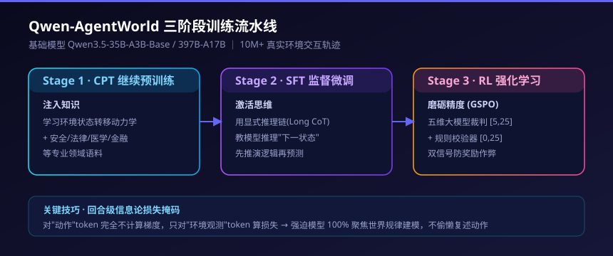
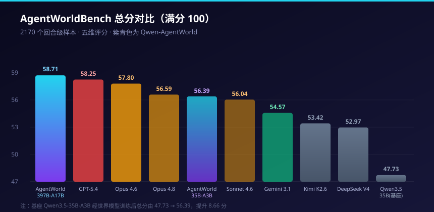
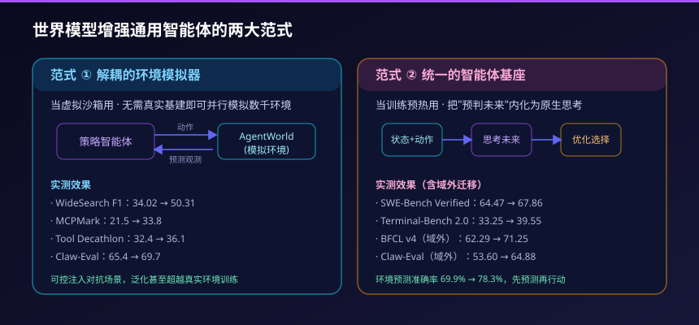

不再"模拟"环境，而是"预言"环境：Qwen-AgentWorld 凭什么压过 GPT-5.4 和 Claude Opus 4.8
一个智能体在按下回车之前，先在脑子里跑了一遍
设想这样一个画面：一个 AI 智能体正在修一台邮件服务器的故障。它准备改一段 Postfix 的路由配置，手指悬在"执行"上方。但在真正动手之前，它先在脑子里推演了一遍——"如果我这么改，系统会先做收件人校验，那这个修复其实会失败。" 于是它没有执行那个无效操作，而是转去改了真正该改的配置，一次通过。
这不是科幻。这是 2026 年 6 月 Qwen 团队论文里一个真实的案例。而让智能体具备这种"先预测、再行动"能力的，是一个全新的东西：语言世界模型（Language World Model, LWM）。
2026 年 6 月 24 日，阿里巴巴 Qwen 团队正式发布 Qwen-AgentWorld——业界首个专为通用智能体设计的原生语言世界模型，同日在 arXiv 公开论文（编号 2606.24597），权重在 Hugging Face 与 ModelScope 全部开源。在配套的 AgentWorldBench 评测上，它的旗舰版本拿到 58.71 分，压过了 GPT-5.4（58.25）和 Claude Opus 4.8（56.59）这两个一线对手。
更值得玩味的是它做对了一件别人没做的事：过去的智能体被训练得很会"做决策"——点哪个按钮、跑哪条命令、调哪个工具；但它们并不真正理解"做完之后会发生什么"。 Qwen-AgentWorld 把后面这件事——预测环境的反馈——做成了模型从预训练第一天起就要学的核心目标。
这篇文章会拆三件事：它的基础模型到底是什么、性能对比到底赢在哪、以及它能落到什么真实场景里、效果如何。
一、先搞清楚：什么是"语言世界模型"
"世界模型"这个词在机器人和强化学习领域不新——它指的是一个能根据"当前观测 + 我要做的动作"来预测"环境下一个状态"的模型。它是推理和规划的认知基础：你之所以能下棋、能开车、能修 bug，是因为你脑子里有一个对"这个动作会带来什么后果"的预判。
过去的世界模型大多面向物理世界（机器人抓取、自动驾驶），观测是图像帧。Qwen-AgentWorld 的创新在于把这个思路搬到了语言空间的智能体环境里。在这里，"观测"不是像素，而是结构化文本：终端的输出、工具返回的 JSON、文件内容、网页的可访问性树（accessibility tree）、APP 的界面层次结构。
所以它的工作方式是这样的：
- 输入：系统提示词 + 历史交互轨迹 + 智能体当前要执行的动作
- 输出：环境会给出的下一个观测状态
举几个具体例子：
- 智能体在终端敲了一条命令 → 模型预测终端会吐出什么输出和提示符
- 智能体在 Android APP 上点了一个按钮 → 模型预测下一个屏幕的界面状态（用结构化文本表示）
- 智能体调用了一个 API 工具 → 模型预测工具的返回，并在多轮之间维持状态一致性
关键词是原生（native）：环境建模不是在一个通用大模型上事后"外挂"适配，而是从继续预训练（CPT）阶段就作为训练目标，自底向上"长"出来的。这是 Qwen-AgentWorld 和"先训通用模型、再微调适配环境"的传统路径最本质的区别。
二、基础模型是哪个？Qwen3.5 系列打底
这是很多人最关心的问题。Qwen-AgentWorld 推出了两个参数规格，分别基于 Qwen3.5 系列：
- Qwen-AgentWorld-35B-A3B：基础模型为
Qwen3.5-35B-A3B-Base，总参数 35B、激活参数 3B - Qwen-AgentWorld-397B-A17B：旗舰版本，对应
Qwen3.5-397B-A17B规格，总参数 397B、激活参数 17B
以开源的 35B-A3B 版本为例，它的架构细节相当能说明问题：
- 模型类型：因果语言模型（作为语言世界模型使用）
- 隐藏维度：2048
- 层数：40 层
- 混合架构布局：10 ×（3 ×（Gated DeltaNet → MoE）→ 1 ×（Gated Attention → MoE））——即线性注意力（Gated DeltaNet）与门控注意力（Gated Attention）交替的混合设计
- MoE 专家：共 256 个专家，激活 8 个路由专家 + 1 个共享专家，专家中间维度 512
- 上下文长度：262,144 tokens（约 256K）
- 训练流程：CPT（继续预训练）→ SFT（监督微调）→ RL（强化学习，采用 GSPO）
值得注意的是上下文长度这一项。官方建议即使遇到显存不足，也应保持至少 128K 的上下文窗口——因为 Qwen-AgentWorld 的核心用途是多轮环境模拟，需要长上下文来维持跨轮次的状态一致性。这不是一个"问一句答一句"的模型，而是要在长链条里持续推演。
另外官方明确声明：训练流程中没有引入任何外部 API 服务的输出——也就是说，没有用 GPT 或 Claude 的输出来蒸馏，数据全部来自真实环境的交互轨迹。这点在当前"互相蒸馏"成风的行业里，是一个值得记上一笔的态度。
三、它是怎么训出来的：三阶段流水线
Qwen-AgentWorld 的训练分三个阶段，每个阶段干一件明确的事：
Stage 1：CPT 继续预训练——注入知识
模型在这一阶段接触超过 1000 万条来自七大领域真实环境的交互轨迹，学习环境的状态转移动力学。同时还喂了大量专业领域语料——网络安全、法律、医学、金融、时事等，让它对"真实世界会怎么反应"有广泛的常识基础。
Stage 2：SFT 监督微调——激活思维
这一阶段用带有显式推理链（Long CoT）的精选轨迹，教会模型明确地推理"下一状态会是什么"。模型不是直接蹦出答案，而是先在长链思考里推演环境逻辑，再给出预测。
Stage 3：RL 强化学习——磨砺精度
基于 GSPO 框架做在线对齐，用一套混合奖励机制提高模拟的保真度和抗干扰鲁棒性。这套奖励是双信号的（后面单开一节讲），目的是让模拟"既真实又不被钻空子"。

这里还有一个聪明的工程细节值得说。在长序列的交互轨迹里，提示词和智能体自己输出的"动作"占了绝大部分 token，而真正的环境反馈（观测）往往很短。如果不加处理，模型会偷懒去学习预测智能体的动作（因为那部分 token 多、好预测），而不是去建模真正难的环境反馈。
Qwen 的解法是 回合级信息论损失掩码（Turn-Level Information-Theoretic Loss Masking）：训练时对"动作"部分的 token 完全不计算梯度（mask 掉），只对"环境观测"的 token 算损失。这等于强迫模型把 100% 的参数容量都聚焦在"世界物理规律"的建模上，而不是浪费在复述智能体已经说过的话上。
四、性能对比：58.71 这个数字赢在哪
为了客观评估世界模型的质量，团队同步构建了 AgentWorldBench 评测基准。它的数据来源很扎实：收集了 5 个前沿模型（Claude 4.6/4.8、GPT-5.4、Gemini 3.1 Pro 等）在 9 个已有智能体测试集（Terminal-Bench、OSWorld-Verified、WebArena Verified、WideSearch、MCPMark、Tool Decathlon 等）上的真实交互日志，共 2170 个回合级样本，每个样本都配有真实环境执行的 ground-truth 观测作为标准答案。
评分采用五个维度：格式合规性、事实正确性、一致性、真实性、整体质量，归一化到 0–100 分。下面是 AgentWorldBench 上的完整对比（按总分排序的关键玩家）：

| 模型 | MCP | Search | 终端 | SWE | Android | Web | OS | 总分 |
|---|---|---|---|---|---|---|---|---|
| Qwen-AgentWorld-397B-A17B | 68.24 | 37.82 | 57.73 | 68.49 | 60.20 | 50.98 | 67.89 | 58.71 |
| GPT-5.4 | 70.10 | 37.26 | 53.69 | 66.29 | 60.00 | 51.80 | 68.58 | 58.25 |
| Claude Opus 4.6 | 69.90 | 29.30 | 57.51 | 64.55 | 61.74 | 51.42 | 70.20 | 57.80 |
| Claude Opus 4.8 | 54.93 | 35.14 | 59.18 | 64.10 | 61.50 | 54.66 | 66.62 | 56.59 |
| Qwen-AgentWorld-35B-A3B | 64.79 | 36.69 | 53.96 | 65.63 | 58.17 | 49.55 | 65.92 | 56.39 |
| Claude Sonnet 4.6 | 70.00 | 28.79 | 56.98 | 64.52 | 58.03 | 50.78 | 63.17 | 56.04 |
| Gemini 3.1 Pro | 59.07 | 30.21 | 52.47 | 59.07 | 61.40 | 52.83 | 66.92 | 54.57 |
| Qwen3.5-397B-A17B（基座） | 68.31 | 30.81 | 55.30 | 64.44 | 54.90 | 48.55 | 60.85 | 54.74 |
| Kimi K2.6 | 65.23 | 27.48 | 52.54 | 58.77 | 58.93 | 50.20 | 60.80 | 53.42 |
| DeepSeek-V4-Pro | 63.27 | 27.61 | 51.26 | 59.44 | 55.17 | 50.32 | 63.70 | 52.97 |
| Qwen3.5-35B-A3B（基座） | 57.87 | 25.98 | 46.13 | 47.58 | 53.18 | 47.10 | 56.27 | 47.73 |
从这张表里能读出几个关键结论：
1. 旗舰版反超一线闭源模型。 397B-A17B 以 58.71 拿下总分第一，领先 GPT-5.4（58.25）、Claude Opus 4.6（57.80）、Claude Opus 4.8（56.59）和 Gemini 3.1 Pro（54.57）。差距虽然不大，但在前沿模型扎堆的区间里，反超本身就说明问题。
2. 优势集中在文本类领域。 它最强的是 SWE（软件工程，68.49，全场最高）、Search（37.82，全场最高）和终端（57.73）。这些都是纯文本、逻辑性强的环境，正好是世界建模能发挥的地方。而在 GUI 类领域（Web、OS、Android），它更多是"有竞争力"而非"统治级"——OS 上 Claude Opus 4.6 的 70.20、Web 上 Claude Opus 4.8 的 54.66 仍然领先。
3. 三阶段训练带来的提升是实打实的。 看最后两行：基座 Qwen3.5-35B-A3B 只有 47.73，而经过世界模型训练的 Qwen-AgentWorld-35B-A3B 飙到 56.39，整整提升了 8.66 分，一举超过了 Claude Sonnet 4.6（56.04），甚至逼近 Claude Opus 4.8。同样，旗舰的基座 Qwen3.5-397B-A17B 从 54.74 提升到 58.71。这证明提升来自"世界建模"这个训练范式本身，而不只是堆参数。
4. Search 是所有模型的共同短板。 全场最高的 Search 分也只有 37.82，远低于 SWE 和工具调用领域。团队解释，这是因为网页内容持续变化、长检索链上要维持事实一致性太难——这也是世界模型当前最难啃的骨头。
还有一个证明"它学到的是通用规律而非死记硬背"的实验很关键：团队只用终端数据做 RL，然后去测其它文本领域。结果终端性能涨了 14.2 分，但 SWE 也涨了 11.5 分、Search 涨了 11.8 分、MCP 工具调用涨了 5.0 分。只训一个领域，多个没训过的领域一起涨——这说明模型学到的是"环境如何响应动作"的通用概念，而非只是记住了终端的输出格式。
那比 GPT-5.5、Claude Fable 5、Ornith-1.0 呢？
这是很多读者会追问的。需要先说清楚：这几个模型都不在 AgentWorldBench 的官方对比里，原因各不相同，硬塞进表里就是编造数据，所以这里单独说明：
- Claude Fable 5（6 月 9 日发布，Anthropic 首个"Mythos 级"模型，比 Opus 4.8 高一个档位，独立测试 SWE-Bench Pro 约 80%）和 GPT-5.5：都发布在 Qwen-AgentWorld 论文定稿之后，论文没来得及纳入。
- GPT-5.6：已于 6 月 26 日以受限预览形式发布（Sol / Terra / Luna 三个版本，Sol 为旗舰），但应美国政府要求，目前仅通过 API 和 Codex 向少数受信任伙伴开放、尚未进入 ChatGPT，也没有在 AgentWorldBench 上的公开分数；且其发布晚于本论文，自然不在评测内。
- Ornith-1.0：是 DeepReinforce 推出的"自搭脚手架"编程智能体（见我们的 Ornith 1.0 拆解），它跑的是 SWE-Bench 这类编程任务榜，衡量的是"能不能把代码写对、把活干完"；而 AgentWorldBench 衡量的是"能不能准确预测环境的下一状态反馈"，两者根本不是同一类指标，无法同表对比。
换句话说，58.71 的领先是相对于同期一线模型（GPT-5.4、Opus 4.8 这一代）而言的"世界模拟保真度"，不代表它在编程或对话能力上能压过 Fable 5 或 GPT-5.5。把世界模型和编程模型放一起比总分，是一个常见但错误的对标方式——它们解决的是智能体能力栈里的不同环节。
五、RL 阶段如何防作弊：双信号奖励
第三阶段的强化学习里，用在线对齐打磨模拟精度极易遇到两个坑：奖励作弊（reward hacking）和训练崩溃。Qwen 用一套双信号机制来兜底，这部分对做 RL 的人很有参考价值：
- 五维大模型裁判（LLM Judge）：用精心设计的 rubric 标准，从事实正确性、指令遵循、格式合规性等 5 个维度对生成的下一状态打 1–5 分，映射到 [5, 25] 的奖励区间。这是"主观但全面"的信号。
- 确定性规则校验器（Rule-Based Verifier）：针对能自动验证的领域（终端里文件是否真的存在、SWE 里代码是否真的编译通过），用硬性二进制规则产出 0/1 信号，等比放大到 [0, 25] 区间。这是"客观但局部"的信号。
两者互补的逻辑是：规则校验器作为"客观锚点"，有效抑制了大模型裁判可能带来的偏见或被绕过的风险，确保微观层面环境模拟的绝对保真度。这套设计的思路，和我们在 Langfuse 大模型可观测性实践 里讨论的"评估必须有客观锚点"是一脉相承的。
六、应用场景与效果：两大范式
Qwen-AgentWorld 的落点不在"替代真实环境"，而在给通用智能体一条互补路径。论文提出了两种应用范式，并都给出了真实的实验数据。

范式 ①：解耦的环境模拟器（当沙箱用）
在这个范式下，Qwen-AgentWorld 是一个完全独立的虚拟沙箱，为下游智能体的强化学习（Sim RL）提供无限、可控的交互环境。它解决两个真实痛点：
无限扩展性。 传统 Agent 强化学习高度依赖真实基建——Android 虚拟机、真实网页、Linux 虚拟机集群。这些又贵又慢又难复现，搜索引擎天天变、终端沙箱要专门维护、业务工具里还有隐私数据、有些操作还不可逆。用语言世界模型，无需部署任何实体基建，就能在回合级别并行模拟数千个真实环境。团队用少量真实交互轨迹，就生成了 4000 个模拟的 OpenClaw 风格环境，覆盖日程安排、写代码、邮件分类、浏览器自动化、文件管理等任务。
效果：用 Qwen-AgentWorld 当模拟器训练，Claw-Eval 从 65.4 提升到 69.7，QwenClawBench 从 47.9 提升到 55.0。作为对照，用一个非专用的普通 Qwen 模型当模拟器，提升微乎其微——这恰好证明了专门的世界模型训练是必要的。
精准可控性。 真实环境里很难遇到极端的长尾错误。但通过在系统提示词里注入"模拟指令"，Qwen-AgentWorld 可以主动制造对抗性场景：在工具调用里注入间歇性 API 错误、返回残缺响应、分页结果、批量操作失败；甚至为搜索任务构造完全虚构但内部自洽的世界——用编造的事实填进结构化数据库和文档里，逼着智能体不能靠记忆答题，必须真的去搜索、提取、组合信息。
效果数据相当亮眼：
- Tool Decathlon：32.4 → 36.1
- MCPMark：21.5 → 33.8
- WideSearch（小模型 F1）：item 级 34.02 → 50.31，row 级 13.72 → 24.21
更有意思的是和真实环境训练的对比：在前 60 个训练步内，可控模拟在 WideSearch 上的 F1 达到 50.3%，略微超过了用真实搜索引擎训练的 45.6%。在虚构搜索世界里摔打过的智能体，反而更会用"整页提取"这种扎实的检索动作，因为模拟器故意不让它从摘要里抄到完整答案。
范式 ②：统一的智能体基座（当预热用）
在这个范式下，世界模型和智能体不再分离，而是合二为一——把"预测世界下一状态"的能力，作为智能体下游训练前的"终极预热（warm-up）"。
逻辑是：先让模型在"下一状态预测"任务上预训练，把"预判未来"内化成一种类似反思、但完全面向未来的元认知思考模式，再去做下游的智能体任务，性能会有显著飞跃。
效果是全面的，而且很多是跨领域的提升：
- Terminal-Bench 2.0：33.25 → 39.55
- SWE-Bench Verified：64.47 → 67.86
- SWE-Bench Pro：42.18 → 47.42
- WideSearch（F1 by item）：33.38 → 46.17
- Claw-Eval（域外）：53.60 → 64.88
- QwenClawBench（域外）：39.76 → 49.43
- BFCL v4（域外）：62.29 → 71.25
注意后三项标了"域外"——也就是训练时根本没见过的任务类型，照样大涨。这强力支持了一个判断："预测下一状态"是一种可迁移的推理技能。 一个能预判终端、网页、工具、APP 下一步反应的模型，自然更擅长在动手之前选对动作。
论文还给了量化证据：在 Terminal-Bench 2.0 的轨迹里，经过世界模型 RL 之后，环境预测准确率从 69.9% 升到 78.3%。开头那个 Postfix 邮件服务器的案例，就是这种"先预测、再行动"能力的具体体现——基线模型只会反复尝试无效修复，而具备世界模型的智能体一眼看穿了那个改法会失败。
七、它的局限：别被"反超"冲昏头
Qwen 团队自己在论文里相当坦诚地列了局限，这部分值得冷静看待：
- 这是 arXiv 预印本，未经同行评审。 很多被评测的基线模型和基准是在论文自己的实验框架内描述的，独立复现仍然重要。
- Search 对所有模型都难。 最高分也才 37.82，建模持续变化的网页内容、维持长检索链的事实一致性，仍是未解难题。
- GUI 领域仍有差距。 在图形界面任务上，部分闭源基线依然领先或接近。
- 模拟质量高度依赖初始状态。 如果没有足够的文件、APP、数据库、权限、界面状态信息，模拟器可能产出"看起来合理但其实错误"的输出。
- 语言模拟用确定性换了通用性。 基于代码的模拟器在环境完全确定时可以做到精确无误；语言模型能覆盖更"脏"的领域，但代价是可能产生幻觉、漏掉隐藏状态、或生成看似真实实则错误的输出。
团队列的未来方向也很清晰：让智能体和世界模型通过自博弈协同进化、给文本界面表示加上截图、学会判断一个任务该路由给模拟器还是真实环境、以及用世界模型动态合成新工具。
小结
Qwen-AgentWorld 的意义，可能比一个"刷榜反超"的故事要大。
它填的是当前智能体研究里"重决策、轻世界预测"的空白。过去大家拼命教智能体"该做什么动作"，却很少教它"理解动作的后果"。Qwen 用 Qwen3.5 系列做基座、用 CPT→SFT→RL 三阶段把环境建模做成原生能力，证明了两件事：第一，世界模型可以解耦成虚拟沙箱，打破真实环境的算力与长尾数据限制；第二，世界模型可以统一进智能体基座，让"先预测、再行动"成为一种可迁移的原生思考模式。
无论是 58.71 这个反超 GPT-5.4 和 Claude Opus 4.8 的分数，还是 SWE-Bench、WideSearch 上那些实打实的下游提升，指向的都是同一个判断：任何真正具备强泛化能力的通用智能体，其大脑内部必然潜移默化地内含一个世界模型。 语言世界建模，很可能成为下一阶段通用 Agent 竞赛的关键变量。
对于关注 Agent 落地的团队，这件事的现实价值是：训练强智能体未必非得砸钱搭真实环境集群了——一个足够好的语言世界模型，就能当那个可扩展、可控、还能造对抗场景的"练兵场"。
免责声明
本文基于 Qwen 团队公开的 arXiv 论文（2606.24597）、官方博客、Hugging Face 模型卡及公开媒体报道整理，所引用的基准数据均来自上述公开来源。论文为预印本，相关结果尚未经过同行评审，实际表现请以独立复现与官方后续更新为准。文中观点不构成任何投资或技术选型建议。
参考来源
- Qwen-AgentWorld: Language World Models for General Agents（arXiv 论文）
- Qwen-AgentWorld-35B-A3B 官方模型卡（Hugging Face）
- Qwen Study Finds World Modeling Can Improve General-Purpose AI Agents（The AI Insider）
- Alibaba's Qwen-AgentWorld improves agent performance across seven benchmarks（CryptoBriefing）
- 阿里通义千问发布首个原生语言世界模型 Qwen-AgentWorld（博客园）
- A preview of GPT-5.6 Sol, Terra, and Luna（OpenAI 帮助中心）
相关阅读
- 从 LLM 到 Agent：ChatGPT 式对话已死，智能体范式崛起
- 企业 AI Agent 部署实战指南 2026
- 物理 AI、世界模型与人形机器人：2026 的新叙事
- Langfuse 大模型与 Agent 可观测性实践指南
- 阿里 Qwen 开源变现 vs AWS：一场商业模式的较量
推荐搭配装备
善其事，利其器。以下硬件能最大化你的AI体验👇
🔗 通过以上链接购买可支持本站持续运营 🙏